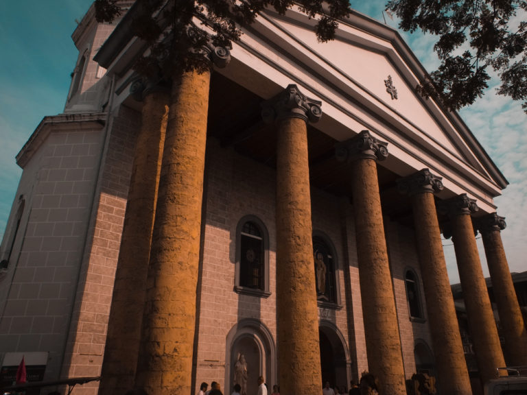

Malabon
Malabon Tourist Spot
Return to the Map

San Bartolome Church
San Bartolome Church is a Roman Catholic church located in Poblacion, Malabon. The church’s eponymous is Malabon’s patron saint, Saint Bartholomew the Apostle whose feast day falls on every 24th day of August.